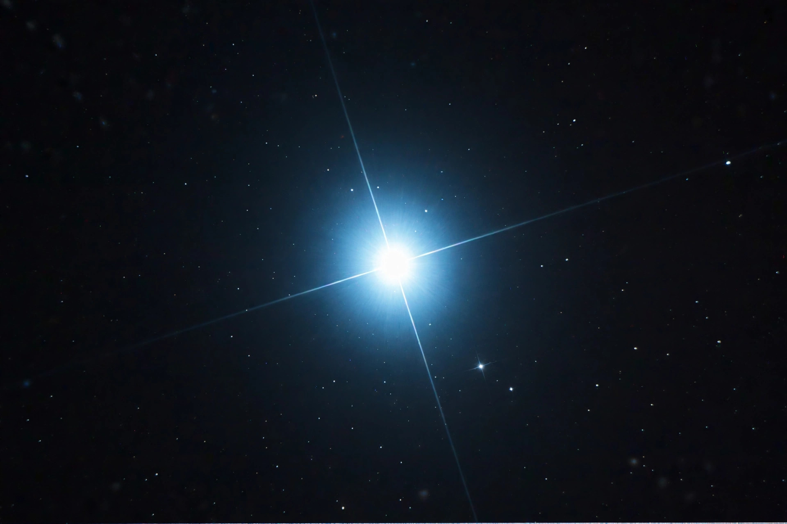

| Constellation | Canis Major |
|---|---|
| Apparent magnitude | −1.46 |
| Distance | 8.6 light-years |
| System | Sirius A (A1V main-sequence star) and Sirius B (white dwarf) |
| Bayer designation | α Canis Majoris |
Sirius is the brightest star in the night sky, with an apparent magnitude of −1.46. Its name is derived from the Greek word Seirios, meaning "glowing" or "scorching". The star, designated α Canis Majoris (Alpha Canis Majoris), is a binary star system in the constellation Canis Major. The bright component, Sirius A, is a white main-sequence star of spectral type A1V, with about twice the mass of the Sun; its companion, Sirius B, is a faint white dwarf that was once the more massive of the two.
Sirius was recorded by the ancient Egyptians, whose calendar was keyed to its heliacal rising, which heralded the annual flooding of the Nile. In 1844 Friedrich Bessel deduced from irregularities in its proper motion that Sirius had an unseen companion; Alvan Graham Clark first observed Sirius B in 1862 while testing a new telescope. In 1915 Walter Sydney Adams measured the companion's spectrum and found it to be a hot but faint star — the first white dwarf known.
The system lies 8.6 light-years from the Sun and is gradually approaching it, so Sirius will brighten slightly over the next tens of thousands of years. The two stars orbit each other with a period of about 50 years at an average separation of about 20 astronomical units. Sirius A has a luminosity about 25 times the Sun's. At an estimated 200–300 million years old, the system began with Sirius B as a star of about five solar masses, which passed through the red-giant phase and shed its outer layers roughly 120 million years ago, leaving a carbon–oxygen white dwarf of about one solar mass compressed into a body roughly the size of the Earth.
Known colloquially as the "Dog Star", Sirius gives us the phrase "dog days of summer", from the period when it rises near the Sun in northern summer, which Greek and Roman authors associated with heat and drought. The star appears in the literature and mythology of cultures worldwide, and the Dogon people of Mali became the subject of contested claims in the 1970s about supposed traditional knowledge of its invisible companion.